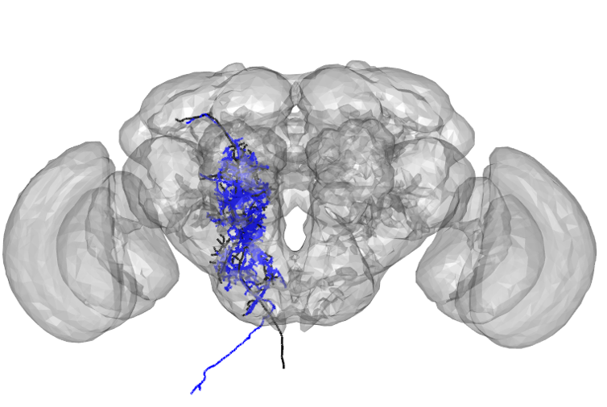
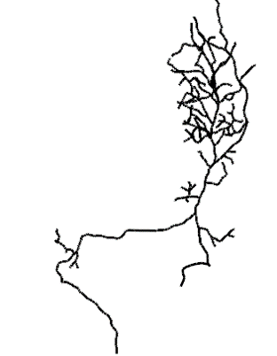
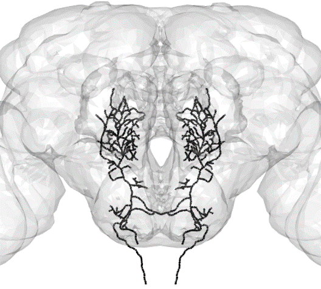
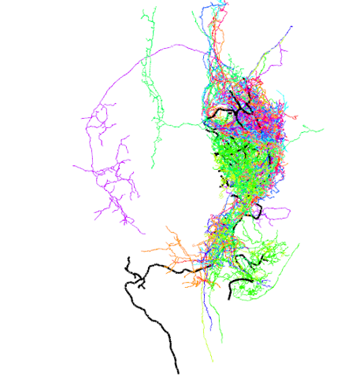
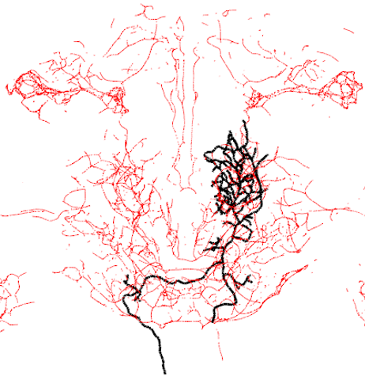
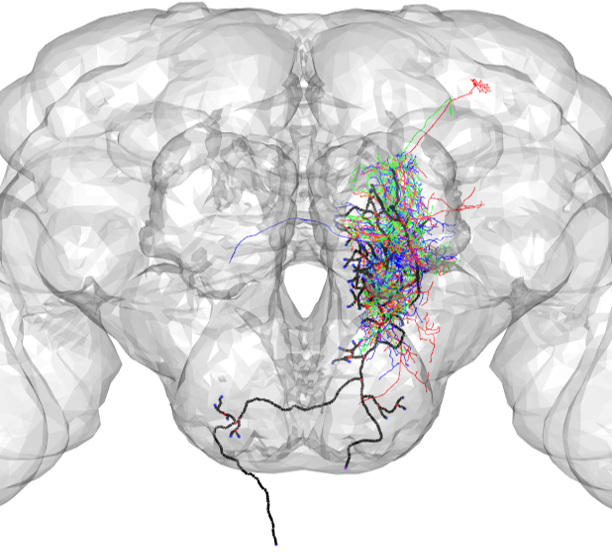

The package nat.nblast implements the NBLAST neuron similarity algorithm described in Costa et al. 2016.
Using NBLAST to assess neuron similarity
NBLAST can be used to assess the similarity between neurons. In this example, NBLAST is used to compare a neuron drawn from a light-level tracing and a neuron drawn from an EM reconstruction (plotted in black and blue, respectively).
neuronTracing <- read.neuron('docs/data/registeredNeuron_JFRC2013.swc',class="neuron")
A2_EM<- read.neuron('docs/data/DNa02_01_09_2020.swc')
neuronEM<- xform_brain(A2_EM,sample=FAFB, reference = JFRC2013)#plot both neurons
open3d(userMatrix=rotationMatrix,windowRect=windowRect,zoom=0.6)
plot3d(neuronTracing,lwd=3,col='black',WithNodes=FALSE)
plot3d(neuronEM,lwd=3,col='blue',WithNodes=FALSE)
plot3d(JFRC2013)
all_neurons=neuronlist(neuronTracing,neuronEM)
nblast_scores=nblast_allbyall(all_neurons,smat = NULL, distance = FALSE)## more than 1 point in .CleanupParentArray, choosing first from: 2 3more than 1 point in .CleanupParentArray, choosing first from: 2 3more than 1 point in .CleanupParentArray, choosing first from: 2 3more than 1 point in .CleanupParentArray, choosing first from: 2 3more than 1 point in .CleanupParentArray, choosing first from: 2 3more than 1 point in .CleanupParentArray, choosing first from: 2 3more than 1 point in .CleanupParentArray, choosing first from: 2 3more than 1 point in .CleanupParentArray, choosing first from: 2 3## neuronTracing neuronEM
## neuronTracing 1.0000000 0.6352001
## neuronEM 0.5026174 1.0000000Using NBLAST to find flycircuit clones
NBLAST can also be used to query databases of neurons based on similarity to your neuron of interest.
First, load in your neuron of interest
g13 <- read.neuron('docs/data/g13_JFRC2013.swc',class="neuron")open3d(userMatrix=rotationMatrix,windowRect=windowRect,zoom=0.6)
plot3d(g13,lwd=3,col='black',WithNodes=FALSE)
To find flycircuit clones,download the flycircuit data and convert it to a dotprops object(this takes a while but only needs to be done once )
fc_download_data('http://flybrain.mrc-lmb.cam.ac.uk/si/nblast/flycircuit/allbyallblastcv4.5.ff',
type='ff')
options('flycircuit.scoremat'="allbyallblastcv4.5.ff")
dps<-read.neuronlistfh("http://flybrain.mrc-lmb.cam.ac.uk/si/nblast/flycircuit/dpscanon.rds",
localdir=getOption('flycircuit.datadir'))
options('nat.default.neuronlist'='dps')
if(!require("devtools")) install.packages("devtools")
devtools::source_gist("bbaf5d53353b3944c090", filename = "FlyCircuitStartupNat.R")
dpscanon=read.neurons(dps)Next, register your neuron to the FCWB template brain (the template brain space to which the flycircuit neurons are registered). If you want to search for bilateral hits, mirror your neuron about the y-axis of the FCWB template brain Convert this registered neuron to a dotprops object.
#transform brain into FCWB template space
g13_FCWB=xform_brain(g13,sample=JFRC2013,reference=FCWB)
g13_FCWB_mirror=mirror_brain(g13_FCWB,brain=FCWB)#plot the neuron and its mirrored version
open3d(userMatrix=rotationMatrix,windowRect=windowRect,zoom=0.6)
plot3d(g13_FCWB,lwd=3,col='black',WithNodes=FALSE)
plot3d(g13_FCWB_mirror,lwd=3,col='black',WithNodes=FALSE)
plot3d(FCWB,alpha=0.2)#convert neuron to dotprops object
g13_dotprops=dotprops(c(g13_FCWB,g13_FCWB_mirror))
Finally, call nbast() with your neuron as the query and the flycircuit data as the target
nblast_fc=nblast(g13_dotprops,target = dpscanon, normalised = TRUE);
#display top 10 hits
nblast_fc_df=data.frame(name=names(nblast_fc),score=as.numeric(nblast_fc))
nblast_fc_df[order(-nblast_fc_df$score),][1:10,]## name score
## 3683 FruMARCM-F002193_seg001 0.3951901
## 660 FruMARCM-M001871_seg001 0.3893991
## 15289 DvGlutMARCM-F1739_seg1 0.3845581
## 440 FruMARCM-M001554_seg001 0.3843038
## 11532 ChaMARCM-F000012_seg002 0.3742967
## 4737 FruMARCM-F002081_seg001 0.3666721
## 4463 FruMARCM-F001540_seg001 0.3564973
## 12912 DvGlutMARCM-F2008_seg1 0.3558630
## 645 FruMARCM-M001857_seg001 0.3538165
## 3739 FruMARCM-F002354_seg001 0.3537375#plot top 10 hits
open3d(userMatrix=rotationMatrix,windowRect=windowRect,zoom=0.6)
plot3d(g13_FCWB,lwd=3,col='black',WithNodes=FALSE)
top10_neurons=dpscanon[nblast_fc_df$name[1:10]]
plot3d(top10_neurons)
Using NBLAST to find Gal4 lines
To find Gal4 lines similar to your neuron of interest, first download the Gal4 data. This takes a while but only needs to be done once. (Note: this database contains only GMR lines)
gmrdps<-read.neuronlistfh("http://flybrain.mrc-lmb.cam.ac.uk/si/nblast/gmrdps/gmrdps.rds",
localdir=getOption('flycircuit.datadir'))Next, register your neuron to the FCWB template brain (the template brain space to which the Gal4 line data is registered). If you want to search for bilateral hits, mirror your neuron about the y-axis of the FCWB template brain Convert this registered neuron to a dotprops object.
#transform brain into FCWB template space
g13_FCWB_mirror=mirror_brain(g13_FCWB,brain=FCWB)
#convert neuron to dotprops object
g13_dotprops=dotprops(c(g13_FCWB,g13_FCWB_mirror))Finally, call nbast with your neuron and the Gal4 data as inputs
nblast_gal4=nblast(g13_dotprops,target = gmrdps, normalised = TRUE);
#display top 10 hits
nblast_gal4_df=data.frame(name=names(nblast_gal4),score=as.numeric(nblast_gal4))
nblast_gal4_df[order(-nblast_gal4_df$score),][1:10,]## name score
## 1528 48B06 0.5386692
## 440 20E07 0.5099647
## 995 33H03 0.4711920
## 1179 38H03 0.4550335
## 1643 50E11 0.4465296
## 486 21C11 0.4329973
## 19 10E03 0.4194184
## 2524 74G09 0.4190854
## 2500 74C11 0.4029378
## 623 24C06 0.3973524#plot top hit
open3d(userMatrix=rotationMatrix,windowRect=windowRect,zoom=0.6)
plot3d(g13_FCWB,lwd=3,col='black',WithNodes=FALSE)
top_neuron=gmrdps[nblast_gal4_df$name[1]]
plot3d(top_neuron)
Using NBLAST to find Hemibrain neurons As before, you first need to register your neuron to the FCWB template brain and convert it to a dotprops object. Next, load in the hemibrain data, which has been converted to a format compatible with the nblast() function
#load in hemibrain data
hemibrain_canon=read.neurons('//files.med.harvard.edu/neurobio/manuals, protocols, and databases/NBLAST/hemibrain_dps_pruned.rds')hemibrain_canon=read.neurons('Z:/manuals, protocols, and databases/NBLAST/hemibrain_dps_pruned.rds')Then, run the nblast search
nblast_results=nblast(g13_dotprops,target = hemibrain_canon,normalised = TRUE)
nblast_results_df=data.frame("bodyid"= names(nblast_results),"score"= as.double(nblast_results))
#display top 10 hits
nblast_results_df[order(-nblast_results_df$score)[1:10],]## bodyid score
## 23365 1140245595_L 0.3529338
## 23366 1140249804_L 0.3415788
## 26381 1436629378_L 0.3311934
## 37388 5813057245_L 0.3270918
## 26874 1479618250_L 0.3242068
## 23803 1170939344_L 0.3177033
## 37763 5813069512_L 0.3141829
## 28475 1696530677_L 0.3126074
## 37827 5813075030_L 0.3068374
## 30242 1963523237_L 0.2965321#plot top 3 hits
top3_hits=nblast_results_df[order(-nblast_results_df$score)[1:3],]
top3_names=top3_hits$bodyid
top3_neurons=hemibrain_canon[top3_names]
open3d(userMatrix=rotationMatrix,windowRect=windowRect,zoom=0.6)
plot3d(FCWB)
plot3d(g13_FCWB,lwd=3,col='black')
plot3d(top3_neurons, soma=T)